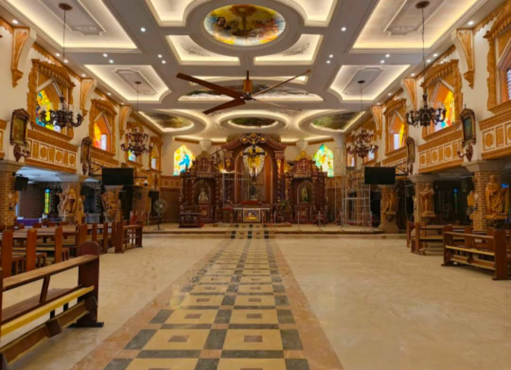
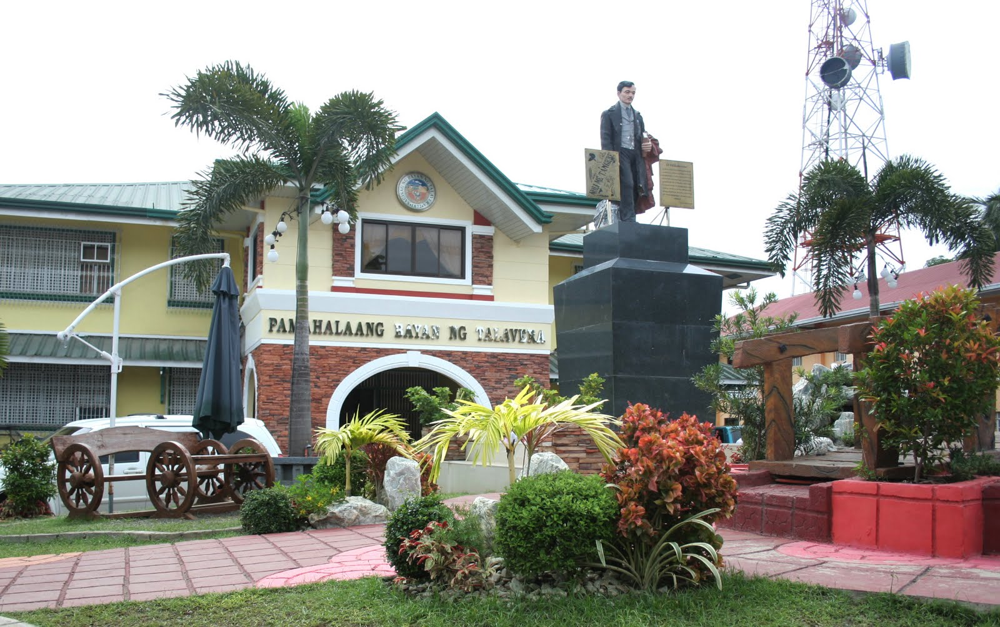
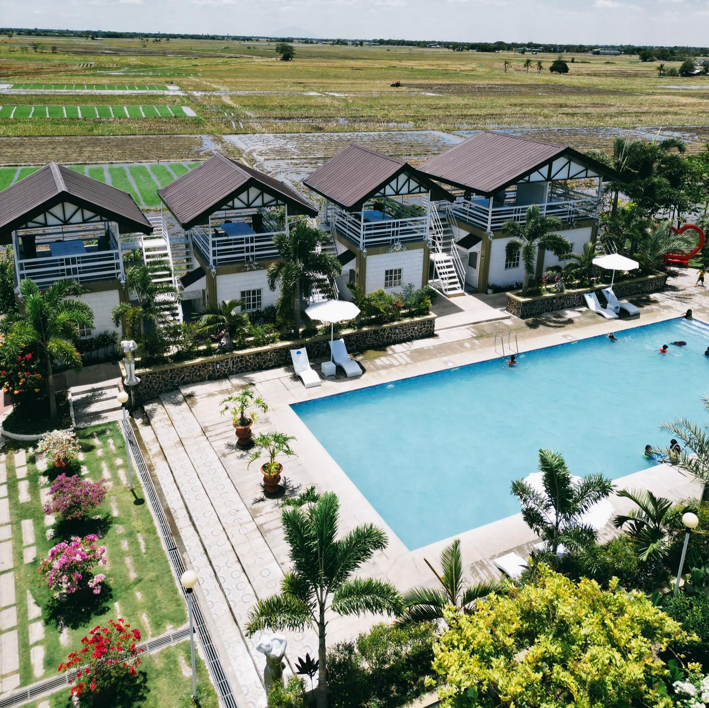
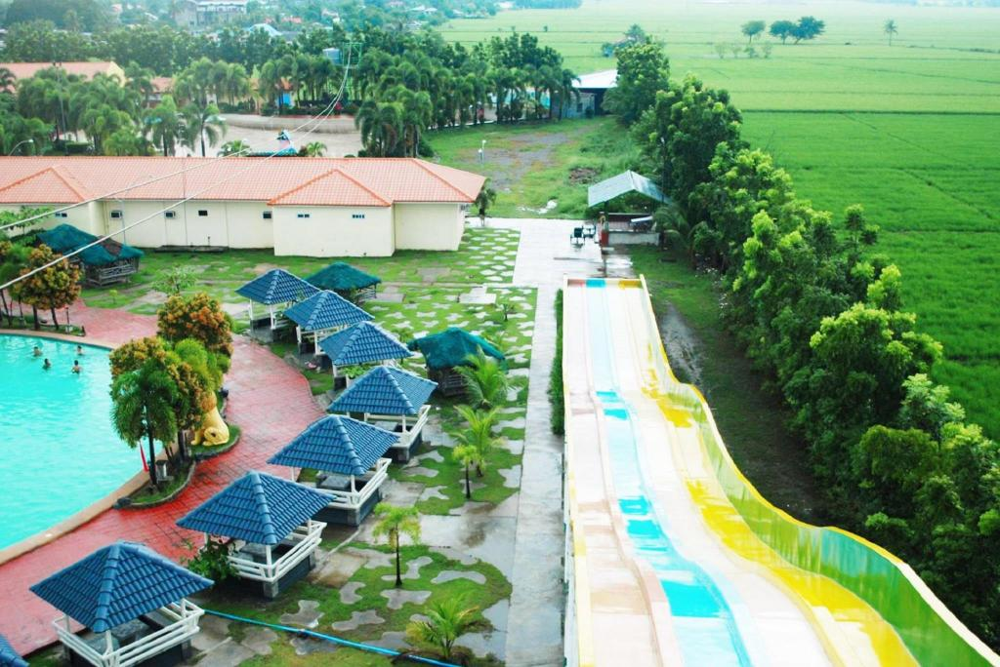
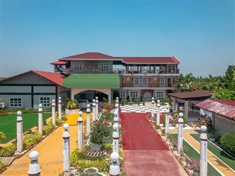
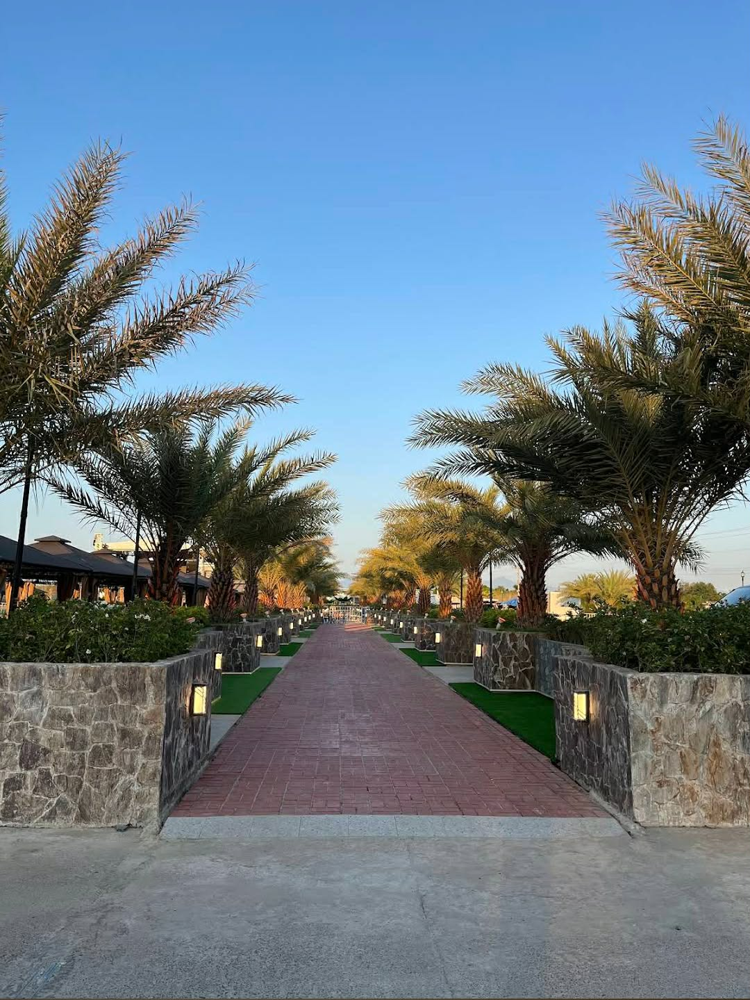

Explore the hidden gems of Talavera with amazing tourist spots!
Explore Now
Diocesan Shrine and Parish of San Isidro Labrador of the Roman Catholic Diocese of Cabanatuan was established on 1846. It is located in Brgy. Maestrang Kikay, Municipality of Talavera, Province of Nueva Ecija. The Parish Fiesta is celebrated every 15th day of May.

The Talavera Municipal Hall, also known as the Executive Building, is a central government office located in Talavera, Nueva Ecija. It serves as the administrative hub for the municipality and is situated near the government office Tourism Office, as well as the MSWDO & Mun. Trial Court.

Mariah Cali Farm & Resort is a guest house located in Talavera, Nueva Ecija, Philippines. It is situated near the sports venue Cabubulaonan Gym and the town Llanera. The resort offers a serene environment with greenery and a homey vibe, making it an ideal place for a vacation with family, friends, or loved ones. The resort is known for its affordable and convenient attractions, ensuring a memorable experience for guests.

Luxurious beachfront resort with crystal-clear pools, modern amenities, and stunning ocean views. Perfect for relaxation and family getaways.
DVF Dairy Farm is a family-run business located in Talavera, Nueva Ecija, approximately 130 km north of Manila. It specializes in carabao's milk, which is considered more nutritious and profitable for farmers compared to cow's milk. The farm is situated in a region known for its abundant forage, ensuring that the carabaos are well-fed, which contributes to the high quality of the milk produced.

RM Farm House Resort, Homestead I, talavera, nueva ecija is located in Talavera, Nueva Ecija. RM Farm House Resort, Homestead I, talavera, nueva ecija is working in Other accommodation activities.

Cozy cafe serving delicious coffee, pastries, and local delicacies in a relaxing ambiance. Perfect spot for hangouts and Instagram-worthy photos.
Talavera, Nueva Ecija is a municipality rich in natural beauty, history, and culture. Visit our amazing tourist spots!
Talavera Tourism Office | tourism@talavera.gov.ph | (044) 123-4567